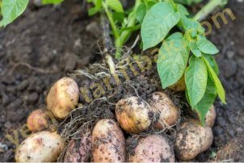

Patlıcan
Türlülerin ve güveçlerin süsü patlıcan pek çok yemeklerde yer alır. Özellikle Türk ve Yunan mutfağının baş tacıdır. Karnıyarık, imam bayıldı gibi yalnızca patlıcandan yapılan yemekler ise Türk mutfağından, başta Balkanlar olmak üzere Avrupa ülkelerine de yayıldı.
Ilık ve sıcak iklimlerin sebzesidir. Ülkemizde daha çok Akdeniz ve Ege kıyılarında yetişir. Gübreyi ve bol toprağı sever. Topraktan aldığı çeşitli madensel tuzlar ve vitaminler beslenme gücünü daha da arttırır.
Çeşitli yemeklerinin yanı sıra turşusu ve reçeli de yapılır. En az yüz çeşit yemeğin içinde patlıcanın yer alması nedensiz değildir. Çünkü:
İdrar söktürür
Baş ağrısını keser
Mideyi güçlendirir
Dip kısmındaki yeşil kabuklar kurutulup toz haline getirildikten sonra acı badem yağı ile karıştırılıp merhem yapılırsa bu merhem basura iyi gelir.
Ağız ve Ter Kokusunu Giderir:
Kaynatılarak suyu içildiği zaman ağız ve ter kokusunu giderir.
Nasıl Alacaksınız?
1. Taze patlıcanın kabuğu gergin ve parlaktır.
2. Patlıcanın içi pamuk gibi olan ve çekirdeksizi makbuldür. Patlıcanlar ne kadar genişse çekirdeği de o kadar fazla olur. Çekirdeksiz patlıcan kalem gibidir.
3. Kızartmaya Avrupa türü yuvarlak, tombul patlıcanlar daha elverişlidir. Zira
bunların çekirdeği azdır.
4. Tazeliğin bir ölçüsü de sapı ve sapın altındaki yapraktır. Sap sert, yaprak yeşil ise
patlıcan taze demektir.
Kızartması Nasıl Hazırlanır?
Halka halka kestiğiniz patlıcanı kızartmadan önce üç dört saat tuzlu suda bekletin. Sevimsiz siyahlığından kurtulup, beyaz bir renk aldığını göreceksiniz.
Yararlı Bilgiler:
Patlıcandaki A vitamini ışıktan ve havadan, C vitamini ise havadan çok etkilenir. Kullanmadığınız patlıcanı açıkta bırakmayın, buzdolabında ya da tel dolapta
saklayın.
Bir kilo patlıcanın 150 gramını sapı ve kabuğu oluşturur. Soyduğunuz takdirde
yenen kısmı 850 gramdır.
Bir patlıcanın ortalama ağırlığı 125 gramdır. Bir kiloya sekiz patlıcan girer.

Patates
Sofraların gözde besini patatesin, çok besleyici bir bitki olduğunu insanlık tarihi yazık ki geç öğrendi. Patatesi ilk kez İspanyollar Güney Amerikan yerlilerinden tanıdı. Daha sonra Drake adında bir korsan bitkiyi Avrupaya getirdi. Fransızlar önceleri, patatesi yalnızca çiçeklerinden yararlanmak için süs bitkisi olarak yetiştirdiler. Onal-tıncı Louis ve Marie Antoinette, balolarda, üstleri elmas dolu giysilerine patates çiçekleri takarlardı.
Çok Besleyici:
İçinde, su, karbonhidratlar, fosfor, demir, manganez, bakır, sodyum ve kalsiyum gibi madensel tuzlar, B, B bir, B altı, K, PP vitaminleri bulunan patates çok zengin bir besindir. İçinde çok sayıda madensel tuz ve vitamin bulunduğundan, organizmanın madensel tuz ve vitamin gereksinimini karşılar. Yapısında bulunan B vitamini bileşikleri sinir sistemini düzene sokar. Enerji verir, beden işçileri patates sayesinde daha az yorgunluk duyarlar.
Mideyi Onarır:
Milletçe, baharatlı, acılı ve ekşili yemeklere düşkün olduğumuzdan, çoğumuz mide rahatsızlıklarından yakınırız. Patates mide gazlannı giderir, mide gastritleri ve ülserlerine karşı ilaçtır. Safra kesesi ve karaciğerdeki yangıları iyileştirir. Şeker hastalarına dokunmaz. Basura iyi gelir.
Susatmaz:
Patatesin yapısında su bulunduğu için, aynı zamanda organizmanın su ihtiyacını da karşılar.
Kansere Karşı İlaçtır:
Avusturyalı doktor R.Bireuss 1950 yılından beri patatesi kansere karşı doğal ilaç olarak uyguluyor ve kanserli hastalarına patates kürleri yaptırıyor.
Cinsel Gücü Arttırır:
Yapısında fosfor bulunduğu için patates erkeğin cinsel gücünü arttırır. İtalyanlar patatese "Aşk yatağının kaloriferi" ismini verirler.
Kanı Zehirlerden Temizler:
Hava kirliliği, radyasyon, sanayi ve tanm ilaçlarının kimyasal artıklarına karşı kam zehirlerden temizler ve hücreleri yeniler.
Kadını Güzelleştirir:
Patateste bulunan manganez kadın cildinin dostudur. Bu değerli sebze yalnız yenerek değil, kremler ve masklar yoluyla da kadın tenini güzelleştirir, cilde gerginlik kazandırır.
Nasıl Alacaksınız?
1- Patatesin iki cinsi vardır. Birinci cinsin eti sarıdır. İkincisinin ise eti yeşile çalar. Eti yeşile çalan patates Avrupada hayvan yemi olarak kullanılır.
2- Makbul patates eti taze iken beyaz, bekletilmemiş iken san olan patatesdir.
3- Patatesin kabuğunu tırnağınızla kazıyın, kabuğu hafifçe kaldırın. İçi sarıysa düşünmeden satın alın. Hem lezzetli hem daha dayanıklıdır.
Nasıl Yiyeceksiniz?
1- Patatesi çok iyi yıkayın. Zira toprak altında yetişir, kirli ve mikroplu îularla haşır
2- Çok zengin bir besin deposudur, îcinde fosfor, demir, manganez ve bakır gibi
madensel tuzlar, karbonhidratlar ve B,B bir, B altı, K ve PP vitaminleri var. B altı vitamini ve B bir vitamini sıcağa karşı duyarlıdır. Ayrıca, vitamin ve madensel tuzların büyük bir kısmı patatesin kabuğunda toplanmıştır. İyice yıkadıktan sonra, bîr süre, içine sirke konmuş suda bekletirseniz bu değerli sebze tüm mikroplardan arınmış olur. işte o zaman onu kabuğuyla birlikte tüketmenizde büyük fayda vardır. Eskiler patatesi mangal, ocak ya da tandırlarda külün altına gömer, kabuğuyla birlikte yerlerdi.
3- Ancak günümüzde patatesi soyarak tüketmek adet olmuştur. Bu takdirde suyun içinde soyulmuş patatesi fazla bekletmeyin. Madensel tuzların bir kısmı eriyip suya karışır. Ayrıca K vitamini de ışığa ve oksijene karşı duyarlıdır.
Nasıl Saklıyacaksınız?
1- Patatesi loş yerlerde koruyun. Zira yapısında bulunan B bir ve K vitaminlerini yitirebilir.
2- Patatesin çeşitli kaliteleri var. En dayanıklısını şöyle anlayabilirsiniz. Bir kaç patatesi kaynayan suya atın ve suyun içine bir çorba kaşığı sirke koyun. Kaynama sırasında patatesler beyazsa dayanıklıdır. Rengi siyaha çalıyorsa dayanıksızdır. Eğer toptan almışsanız, bu tür dayanıksız patatesi bir an önce tüketmeye bakın, aksi takdirde filizlenir.
Patates Kızartması:
Her ev kadını hazırladığı patates kızartması için patatesi kendi alıştığı şekle göre keser. Kimi dilim dilim, kimi yuvarlak. Burada önemli olan kızartmanın lezzeti ve aynı yağın yeniden yemekler veya kızartmalar için kullanılabilmesidir. Yapacağınız şey şu:
1- Harlı ateş yağın en büyük düşmanıdır. Yapısını değiştirir, mideye zararlı hale getirir. Doğradığınız patatesleri çok kızgın bir yağ içine değil, normal yanmış yağın içine koyun. Yani yağ tavada cızırdayıp yanık kokusu çıkarmadan patatesleri içine atın.
2- Patatesler biraz kızarınca çıkarın. Büyücek bir tabağa alın. Birkaç dakika bekletin sonra yeniden yağa koyun. Bu sırada ince doğranmış bir diş sarımsak da eklerseniz kızartmanız daha lezzetli olur.
Yararlı Bilgiler:
1- Genellikle patates kızartırken bütün daireyi, hatta bütün apartmanı yağ kokusu kaplar. Bu kokuyu önlemek isterseniz tavanın içine bir dal maydanoz atın.
2- Patates kızartmasında kullandığınız yağı yeniden kullanmak istiyorsanız içine bir havucu rendeleyerek koyun ve onu böyle bekletin. Rendelenmiş havuç kızarmış bir yağın zararlarını ortadan kaldırır.
3- Patatesin bazı türleri pişerken siyahlaşır. Kar gibi beyaz olmasını istiyorsanız patatesi haşlarken ya da pişirirken tencereye bir çorba kaşığı sirke koyun. Sirkenin ekşimsi bir tat vereceği şeklinde bir endişeniz olmasın.
4- Patatesi bir iğneyle uzunlamasına bir kaç yerden delerseniz daha çabuk piştiğini göreceksiniz.
5- Gerek kızartmada, gerekse yemeklerde patatesin kolayca pişmesini istiyorsanız onu uzunlamasına kesin.
Lahana
Bir mani, yahni, muhallebi ve sütlaçla birlikte lahana dolmasını da över:
Yahni taamların başı
Dolma onun karındaşı
Sofranızdan kaldırmayın
muhallebiyle sütlacı.
Avrupanın ünlü hekimleri ve beslenme uzmanlarının "lahana ölmek üzere olan adama can verir" demeleri boşuna değildir. Eski çağın, İslam, Yunan ve Romalı hekimleri de lahanayı her derde deva olarak görürlerdi. Boyu, boşu ile bahçelerin kralı lahana besin değeri yönünden çok zengindir. İçinde demir, bakır, magnezyum, iyot, arsenik ve klorofil başta olmak üzere çok çeşitli mineraller ve oligo-elementler, K,B(1),B(2) ve PP vitaminleri, bitkisel protein, karoten ve az miktarda da şeker var. Eski Yunan doktorlarından Chrysippe lahananın yararları üstüne başlıbaşına bir kitap yazdı. Düşünür ve bilgin Pythagore, sürekli, lahananın meziyetlerinden söz etti. Romalı Caton L'Ancien "Latinler yüzyıllarca yalnız lahana kullanarak hekim oldular" diyor. Ünlü İslam hekimi İbni Sina ye Arap hekimi Davudi Antaki pek çok hastalığa karşı lahanayı ilaç olarak önerirlerdi.
Yararları:
Bu değerli sebze idrar söktürerek keçeleşme ve ödemden doğan şişkinlikleri giderir. Kanı zehirlerden temizler. İçinde B vitaminleri bulunduğu için sinirleri yatıştmr. Vücudun mineral ve vitamin ihtiyacını karşılar. Magnezyum ve karoten içerdiği için cildi güzelleştirir. Çok yaşayıp dinç kalmayı sağlar. Lahananın bir diğer adı da "yoksulların hekimi"dir. Yanıklara, böcek sokmalarına, ciltteki çatlaklara ve sivilcelere karşı etkili bir ilaçtır. Ağrıları dindirir.
Nasıl Alacaksınız?
1. Lahananın küçüğü değil, büyüğü makbuldür. Nüfusunuz kalabalık değilse, en azından orta boylusunu tercih edin.
2. Lahananın beyaz yapraklısı makbuldür. Dıştaki yeşil yapraklanndan bir kaç tanesini kaldırın. Altta beyaz yapraklar görünüyorsa o lahanayı satın alın.
3. İlk çıkan lahanalar değil sonrakiler daha lezzetlidir. Lahana kırağısını aldığı zaman tatlanır.
Nasıl Yiyeceksiniz?
1. Toprakla haşır neşirdir. Bu nedenle sulardaki mikroplarla temas halindedir. Yap-raklannı tek tek ayırarak yıkayın. Bununla da yetinmeyin içine sirke dökülmüş temiz suda bir süre bekletin.
2. Ağzı sımsıkı kapalı bir tencerede kendi buğusuyla pişirin.
Yararlı Bilgiler:
1. Bu haşlanma sırasında lahananın çıkardığı kötü koku ünlüdür. Eğer bu kokuyu önlemek istiyorsanız lahanayı koymadan önce tencerenin dibine, üstüne birazcık sirke serptiğiniz temiz ve kalın bir bez yerleştirin.
2. Lahananın kokusu bir de şöyle önlenebilir: Pişirirken suyun içine biraz ekmek kabuğu atın.
3. Lahanadan ev temizliğinde de yararlanabilirsiniz. Tıkız bir lahanayı ortadan ikiye bölün. Her parçasını fırça gibi kullanarak halılarınızı silin. Şaşılacak bir sonuç elde edeceksiniz. Daha sonra elektrik süpürgesi ya da süpürgeyle halının üstünde kalan lahana artıklarını süpürürsünüz.
4. Temizlerken bir kilo lahananın aşağı yukarı 200 gramı ayıklanır.
Suyunu Atmayın:
Haşladığınız lahananın suyu vitaminler ve madensel tuzlarla doludur. Bu suyu çorbalarınıza katarak değerlendirin. Ya da yüzünüzü yıkayın. Cildinizi güzelleştirir.